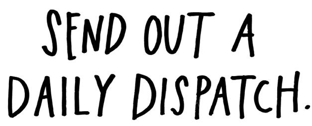
“Put yourself, and your work, out there every day, and you’ll start meeting some amazing people.”
—Bobby Solomon
Overnight success is a myth. Dig into almost every overnight success story and you’ll find about a decade’s worth of hard work and perseverance. Building a substantial body of work takes a long time—a lifetime, really—but thankfully, you don’t need that time all in one big chunk. So forget about decades, forget about years, and forget about months. Focus on days.
The day is the only unit of time that I can really get my head around. Seasons change, weeks are completely human-made, but the day has a rhythm. The sun goes up; the sun goes down. I can handle that.
Once a day, after you’ve done your day’s work, go back to your documentation and find one little piece of your process that you can share. Where you are in your process will determine what that piece is. If you’re in the very early stages, share your influences and what’s inspiring you. If you’re in the middle of executing a project, write about your methods or share works in progress. If you’ve just completed a project, show the final product, share scraps from the cutting-room floor, or write about what you learned. If you have lots of projects out into the world, you can report on how they’re doing—you can tell stories about how people are interacting with your work.
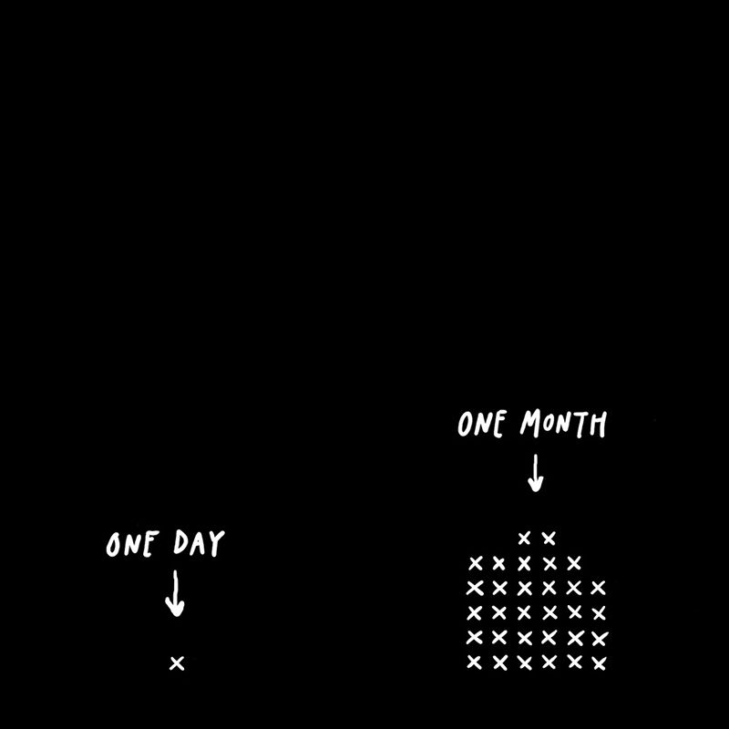
A daily dispatch is even better than a résumé or a portfolio, because it shows what we’re working on right now. When the artist Ze Frank was interviewing job candidates, he complained, “When I ask them to show me work, they show me things from school, or from another job, but I’m more interested in what they did last weekend.” A good daily dispatch is like getting all the DVD extras before a movie comes out—you get to watch deleted scenes and listen to director’s commentary while the movie is being made.
The form of what you share doesn’t matter. Your daily dispatch can be anything you want—a blog post, an email, a tweet, a YouTube video, or some other little bit of media. There’s no one-size-fits-all plan for everybody.
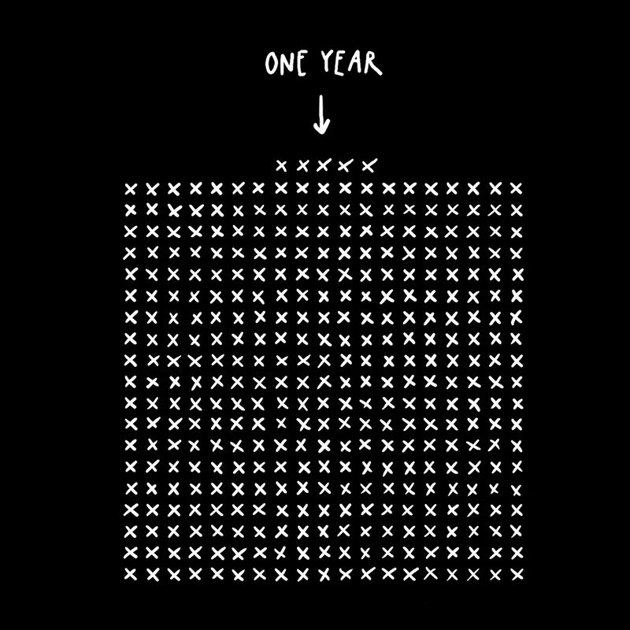
Social media sites are the perfect place to share daily updates. Don’t worry about being on every platform; pick and choose based on what you do and the people you’re trying to reach. Filmmakers hang out on YouTube or Vimeo. Businesspeople, for some strange reason, love LinkedIn. Writers love Twitter. Visual artists tend to like Tumblr, Instagram, or Facebook. The landscape is constantly changing, and new platforms are always popping up . . . and disappearing.
Don’t be afraid to be an early adopter—jump on a new platform and see if there’s something interesting you can do with it. If you can’t find a good use for a platform, feel free to abandon it. Use your creativity. Film critic Tommy Edison, who’s been blind since birth, takes photos of his day-to-day life and posts them to Instagram under @blindfilmcritic. He’s followed by more than 30,000 people!
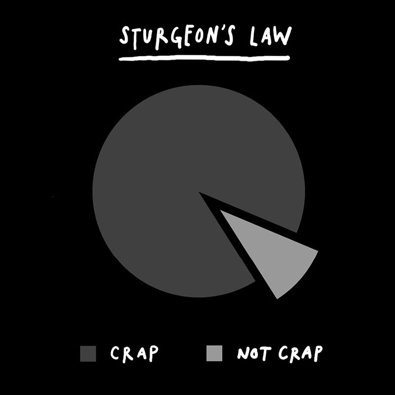
A lot of social media is just about typing into boxes. What you type into the box often depends on the prompt. Facebook asks you to indulge yourself, with questions like “How are you feeling?” or “What’s on your mind?” Twitter’s is hardly better: “What’s happening?” I like the tagline at dribbble.com: “What are you working on?” Stick to that question and you’ll be good. Don’t show your lunch or your latte; show your work.
Don’t worry about everything you post being perfect. Science fiction writer Theodore Sturgeon once said that 90 percent of everything is crap. The same is true of our own work. The trouble is, we don’t always know what’s good and what sucks. That’s why it’s important to get things in front of others and see how they react. “Sometimes you don’t always know what you’ve got,” says artist Wayne White. “It really does need a little social chemistry to make it show itself to you sometimes.”
Don’t say you don’t have enough time. We’re all busy, but we all get 24 hours a day. People often ask me, “How do you find the time for all this?” And I answer, “I look for it.” You find time the same place you find spare change: in the nooks and crannies. You find it in the cracks between the big stuff—your commute, your lunch break, the few hours after your kids go to bed. You might have to miss an episode of your favorite TV show, you might have to miss an hour of sleep, but you can find the time if you look for it. I like to work while the world is sleeping, and share while the world is at work.
Of course, don’t let sharing your work take precedence over actually doing your work. If you’re having a hard time balancing the two, just set a timer for 30 minutes. Once the timer goes off, kick yourself off the Internet and get back to work.
“One day at a time. It sounds so simple. It actually is simple but it isn’t easy: It requires incredible support and fastidious structuring.”
—Russell Brand
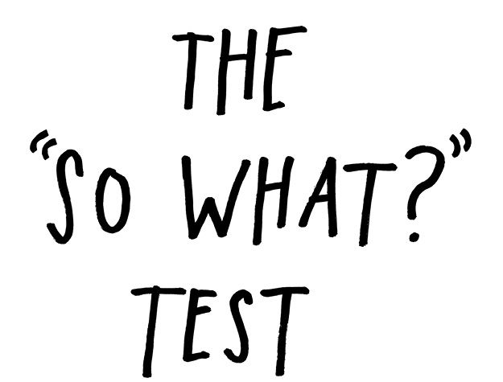
“Make no mistake: This is not your diary. You are not letting it all hang out. You are picking and choosing every single word.”
—Dani Shapiro
Always remember that anything you post to the Internet has now become public. “The Internet is a copy machine,” writes author Kevin Kelly. “Once anything that can be copied is brought into contact with the Internet, it will be copied, and those copies never leave.” Ideally, you want the work you post online to be copied and spread to every corner of the Internet, so don’t post things online that you’re not ready for everyone in the world to see. As publicist Lauren Cerand says, “Post as though everyone who can read it has the power to fire you.”
Be open, share imperfect and unfinished work that you want feedback on, but don’t share absolutely everything. There’s a big, big difference between sharing and over-sharing.
The act of sharing is one of generosity—you’re putting something out there because you think it might be helpful or entertaining to someone on the other side of the screen.
I had a professor in college who returned our graded essays, walked up to the chalkboard, and wrote in huge letters: “SO WHAT?” She threw the piece of chalk down and said, “Ask yourself that every time you turn in a piece of writing.” It’s a lesson I never forgot.
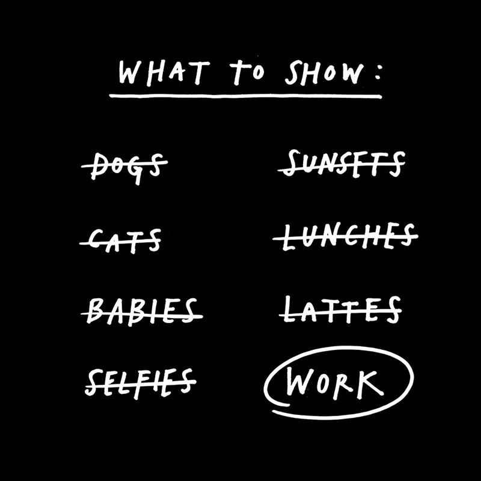
Always be sure to run everything you share with others through The “So What?” Test. Don’t overthink it; just go with your gut. If you’re unsure about whether to share something, let it sit for 24 hours. Put it in a drawer and walk out the door. The next day, take it out and look at it with fresh eyes. Ask yourself, “Is this helpful? Is it entertaining? Is it something I’d be comfortable with my boss or my mother seeing?” There’s nothing wrong with saving things for later. The save as draft button is like a prophylactic—it might not feel as good in the moment, but you’ll be glad you used it in the morning.
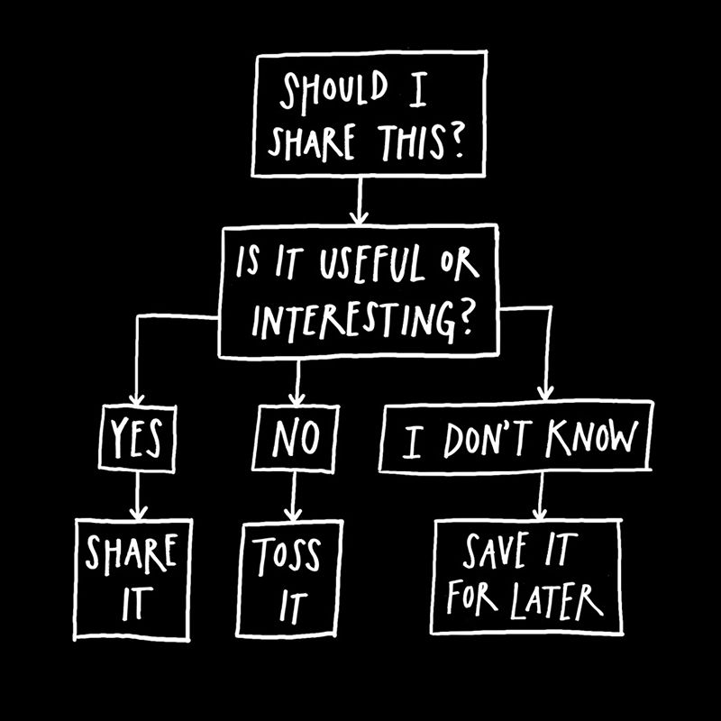
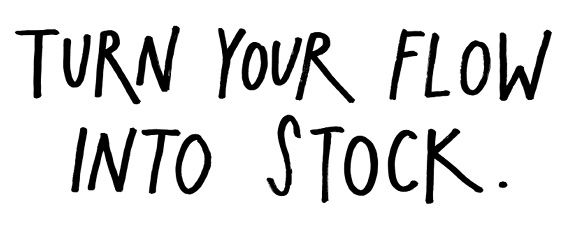
“If you work on something a little bit every day, you end up with something that is massive.”
—Kenneth Goldsmith
“Stock and flow” is an economic concept that writer Robin Sloan has adapted into a metaphor for media: “Flow is the feed. It’s the posts and the tweets. It’s the stream of daily and sub-daily updates that remind people you exist. Stock is the durable stuff. It’s the content you produce that’s as interesting in two months (or two years) as it is today. It’s what people discover via search. It’s what spreads slowly but surely, building fans over time.” Sloan says the magic formula is to maintain your flow while working on your stock in the background.
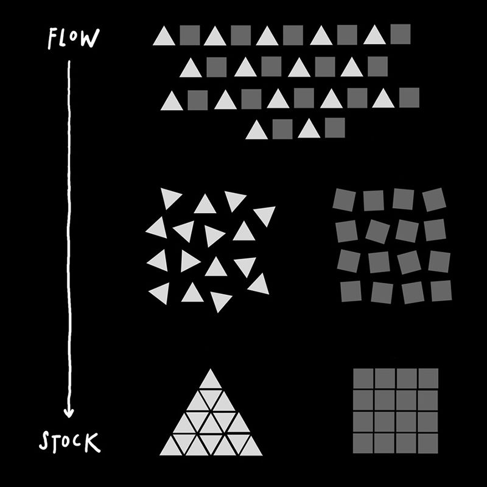
In my experience, your stock is best made by collecting, organizing, and expanding upon your flow. Social media sites function a lot like public notebooks—they’re places where we think out loud, let other people think back at us, then hopefully think some more. But the thing about keeping notebooks is that you have to revisit them in order to make the most out of them. You have to flip back through old ideas to see what you’ve been thinking. Once you make sharing part of your daily routine, you’ll notice themes and trends emerging in what you share. You’ll find patterns in your flow.
When you detect these patterns, you can start gathering these bits and pieces and turn them into something bigger and more substantial. You can turn your flow into stock. For example, a lot of the ideas in this book started out as tweets, which then became blog posts, which then became book chapters. Small things, over time, can get big.
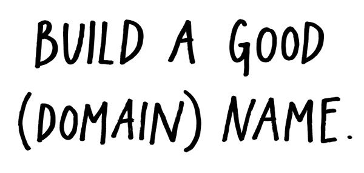
“Carving out a space for yourself online, somewhere where you can express yourself and share your work, is still one of the best possible investments you can make with your time.”
—Andy Baio
Social networks are great, but they come and go. (Remember Myspace? Friendster? GeoCities?) If you’re really interested in sharing your work and expressing yourself, nothing beats owning your own space online, a place that you control, a place that no one can take away from you, a world headquarters where people can always find you.
More than 10 years ago, I staked my own little Internet claim and bought the domain name austinkleon.com. I was a complete amateur with no skills when I began building my website: It started off bare bones and ugly. Eventually, I figured out how to install a blog, and that changed everything. A blog is the ideal machine for turning flow into stock: One little blog post is nothing on its own, but publish a thousand blog posts over a decade, and it turns into your life’s work. My blog has been my sketchbook, my studio, my gallery, my storefront, and my salon. Absolutely everything good that has happened in my career can be traced back to my blog. My books, my art shows, my speaking gigs, some of my best friendships—they all exist because I have my own little piece of turf on the Internet.
So, if you get one thing out of this book make it this: Go register a domain name. Buy www.[insert your name here].com. If your name is common, or you don’t like your name, come up with a pseudonym or an alias, and register that. Then buy some web hosting and build a website. (These things sound technical, but they’re really not—a few Google searches and some books from the library will show you the way.) If you don’t have the time or inclination to build your own site, there’s a small army of web designers ready to help you. Your website doesn’t have to look pretty; it just has to exist.
Don’t think of your website as a self-promotion machine, think of it as a self-invention machine. Online, you can become the person you really want to be. Fill your website with your work and your ideas and the stuff you care about. Over the years, you will be tempted to abandon it for the newest, shiniest social network. Don’t give in. Don’t let it fall into neglect. Think about it in the long term. Stick with it, maintain it, and let it change with you over time.
When she was young and starting out, Patti Smith got this advice from William Burroughs: “Build a good name. Keep your name clean. Don’t make compromises. Don’t worry about making a bunch of money or being successful. Be concerned with doing good work . . . and if you can build a good name, eventually that name will be its own currency.”
The beauty of owning your own turf is that you can do whatever you want with it. Your domain name is your domain. You don’t have to make compromises. Build a good domain name, keep it clean, and eventually it will be its own currency. Whether people show up or they don’t, you’re out there, doing your thing, ready whenever they are.
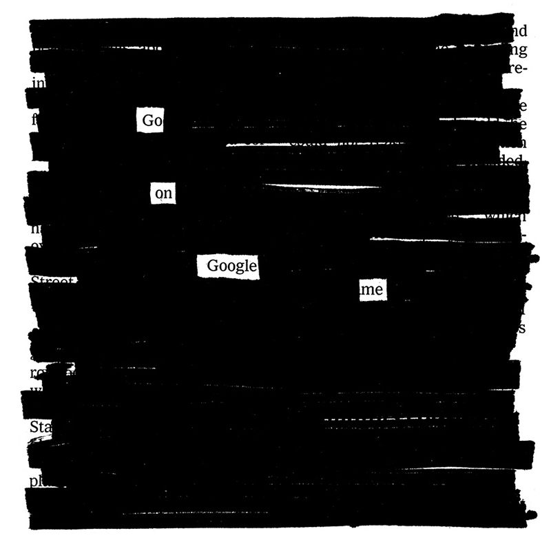